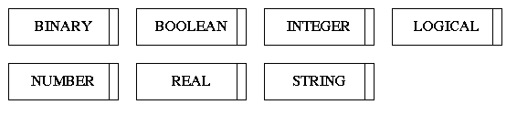
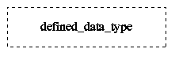
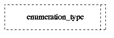
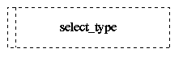
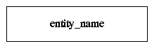
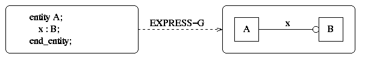
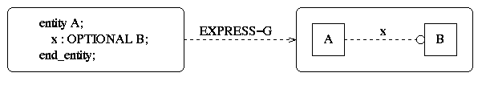
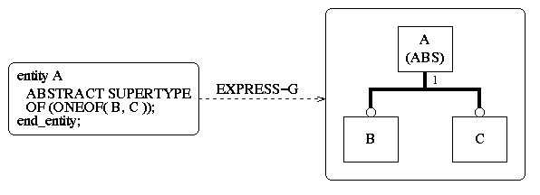

The information modelling language EXPRESS has been developed in recent years to describe information in such a way that it is independent of the implementation language. EXPRESS describes neither data structures nor the structure of a data base. The background for the development of EXPRESS is the intention of standardizing product data which is carried forward by the STEP initiative, formally identified as ISO 10303. EXPRESS is a part of the standard ISO 10303-11.
This chapter describes the basic elements of the EXPRESS language, known as data types and entities. The concepts of the SUBTYPE and SUPERTYPE relationship are also explained. The whole area of expressions and executable statements of EXPRESS is not covered. A section on EXPRESS-G, the graphical representation of the EXPRESS elements is also included.
A SCHEMA defines a universe of discourse in which the objects declared have a related meaning and purpose. It provides a context for the definition of the objects of interest. The order in which objects are declared is never relevant to the meaning of a schema. An information model may consist of one or more schemas. For example, an information model of a company may comprise several schemas, such as employee_record and payroll_system. The employee_record schema contains declarations of objects including executive, manager, staff_member. Objects declared in the employee_record schema are not visible in the payroll_system schema and vice versa. In order to access declarations made in other schemas, EXPRESS provides a facility to establish an interface between two schemas. For example, if the payroll_system schema needs to access an object (e.g. entity staff_member) defined in the employee_record schema, it would state the required schema name and the foreign declaration name. In figure A.1, the payroll_system schema has a REFERENCE specification which permits access to entity staff_member in the employee_record schema.
SCHEMA employee_record;
ENTITY staff_member;
END_ENTITY;
END_SCHEMA;
SCHEMA payroll_system;
REFERENCE FROM employee_record (staff_member);
END_SCHEMA;
|
This section describes the data types provided in the EXPRESS language. Types are used to represent domains of instance values.
The simple types represent the ``atomic'' units of data which cannot be further subdivided. Table A.1 lists the simple types available in EXPRESS.
| BINARY | represents a sequence of bits which may have a value of 0 or 1. |
| BOOLEAN | represents a TRUE or FALSE value. |
| INTEGER | represents an integer. |
| LOGICAL | represents a TRUE, FALSE or UNKNOWN value. |
| NUMBER | can be either a REAL or an INTEGER. |
| STRING | represents a sequence of zero or more characters. |
| REAL | represents a real number. |
Aggregation types are used to represent ordered or unordered collections of elements of some basic type. These collections can have fixed or varying sizes depending on the class of the aggregation type. EXPRESS supports four different classes of aggregation which are listed in table A.2.
| ARRAY | represents an ordered, fixed-size collection of elements of a given type. Each array element may be addressed by a subscript. For example, a transformation matrix in geometry may be represented as a two-dimensional array of numbers. |
| BAG | represents an unordered collection of elements of a given type. The number of elements that can be held in a bag may be specified. Duplicate elements are allowed in a bag. For example, the collection of coins in a wallet may be a bag. |
| LIST | represents an ordered collection of elements of a given type. The number of elements that can be held in a list may be specified. Duplicate elements are allowed in a list. For example, a poem may be represented by a list of strings. |
| SET | represents an unordered collection of elements of a given type. The number of elements that can be held in a set may be specified. No two elements of a set can have the same value. For example, the population of people in the world is a set. |
A defined data type is a user extension to the predefined simple types. It is defined by a TYPE declaration. For example, the concept of money can be represented by a real number, as shown in figure A.2. The amount_of_money type helps to clarify the meaning and context of the real number. Furthermore, it has a domain rule which constrains the value of an occurrence of the type. The SELF keyword refers to the occurrence of the type being declared. All domain rules are stated after the WHERE keyword. An explanation of the domain rule is stated inside a comment. Any text between the character pair ( and the character pair ) is regarded as a comment.
TYPE amount_of_money
= real;
WHERE
meaningful_amount :
(* The amount of money must be greater than or equal to zero. *)
SELF >= 0;
END_TYPE;
|
An ENUMERATION data type is an ordered set of values represented by names. For example, the title of a person may be either Mr, Miss, Mrs, Ms or Dr, as shown in figure A.3.
TYPE person_title
= ENUMERATION OF (Mr, Miss, Mrs, Ms, Dr);
END_TYPE;
|
A SELECT data type defines a named collection of other types. An occurrence of a select data type is an occurrence of one of the types specified in the selection list. For example, office equipment can be chosen from a selection of computer, printer, telephone or typewriter, as shown in figure A.4.
TYPE office_equipment
= SELECT (computer, printer, telephone, typewriter);
END_TYPE;
|
An ENTITY defines an object of interest. An object is described by its attributes. Each attribute represents a characteristic of the entity. The value of each attribute has an associated domain which can be a type or an entity. An attribute can be either required or optional. If an attribute is required, every occurrence of the entity shall have a value for that attribute. On the other hand, if an attribute is optional, the attribute need not have a value in order for an occurrence of that entity to be valid. Moreover, an entity may have derived attributes. A derived attribute represents information which is computed from the values of other attributes in the entity.
In figure A.5, the name attribute of entity staff_member describes the name of a staff member. Every staff member has a name, so it is a required attribute. A staff member may have a number of pieces of office equipment. This is represented by a set of office_equipment in the equipment attribute. Furthermore, every staff member must have a salary, so the salary attribute is a required attribute, too. The derived attribute, tax_payable, is declared after the DERIVE keyword. As for other attributes, the derived attribute also has an associated domain. In addition, an expression is stated to define the derivation of the derived attribute. In this example, the amount of tax payable to the inland revenue is 25 percent of the salary.
ENTITY staff_member;
name : person_name;
equipment : SET OF office_equipment;
salary : amount_of_money;
DERIVE
tax_payable : amount_of_money
:= 0.25 * salary;
END_ENTITY;
|
In addition, EXPRESS allows domain rules to be stated which constrain the value of individual attributes or a combination of attributes for every entity instance. Also, global rules can be applied for coordination of attributes that exist in different entities.
In figure A.6, the surname and the first_name attributes of entity person_name are required, whereas the middle_name attribute is OPTIONAL. This is because every person must have a surname and a first name, but not necessarily a middle name. Entity person_name has a domain rule (meaningful_name) which requires the surname, the first_name and the middle_name attributes to be distinct.
ENTITY person_name;
title : person_title;
surname : string;
first_name : string;
middle_name : OPTIONAL string;
WHERE
meaningful_name :
(surname <> first_name) AND
(first_name <> middle_name) AND
(surname <> middle_name);
END_ENTITY;
|
EXPRESS allows for the classification of entities. It provides a mechanism of specialisation and generalisation of entities. An entity may be defined as a generalisation (i.e. SUPERTYPE) of other entities. An entity may also be defined as a specialisation (i.e. SUBTYPE) of other entities. All attributes and constraints stated in a supertype are inherited by its subtypes. The subtype/supertype relationship is transitive.
In figure A.7, entity electronic_equipment is a supertype of entity printer, and entity printer is a supertype of entity laser_printer, hence entity electronic_equipment is a supertype of entity laser_printer. Entity laser_printer inherits the manufacturer attribute from entity electronic_equipment and the printing_speed attribute from entity printer. Entity printer is defined as an ABSTRACT SUPERTYPE of entity laser_printer or entity dot_matrix_printer. This means that an occurrence of a printer must be an occurrence of one of the subtypes.
ENTITY electronic_equipment
ABSTRACT SUPERTYPE OF (ONEOF(computer, printer, fax_machine));
manufacturer : ...
END_ENTITY;
ENTITY printer
ABSTRACT SUPERTYPE OF (ONEOF(laser_printer, dot_matrix_printer))
SUBTYPE OF (electronic_equipment);
printing_speed : ...
END_ENTITY;
ENTITY laser_printer
SUBTYPE OF (printer);
toner : ...
END_ENTITY;
ENTITY dot_matrix_printer
SUBTYPE OF (printer);
number_of_pins : ...
END_ENTITY;
|
EXPRESS-G is a graphical notation for the display of information models. It is defined in ISO 10303-11. The notation only supports a subset of the EXPRESS language. It cannot be used to display constraints provided by the EXPRESS language.
Definition symbols denote the objects which form the basis of the information model.





Relationship symbols describe different types of relationship that exist between the definition symbols.
If entity A has a required attribute x which is entity B, then a solid line is drawn between the two entity symbols. The attribute name is indicated on the line; its circled end denotes the direction of the relationship, as shown in figure A.13.

If entity A has an optional attribute x which is entity B, then a dashed line is drawn between the entity symbols. The attribute name is indicated on the line; its circled end denotes the direction of the relationship, as shown in figure A.14.

If entity A is declared as a SUPERTYPE of entities B and C, then a thick line is drawn between the supertype entity and each of its subtype entities. The ONEOF relationship may be indicated by a ``T branching'' relationship line. The circled end of the relationship line denotes the subtype end of the relationship, as shown in figure A.15.
